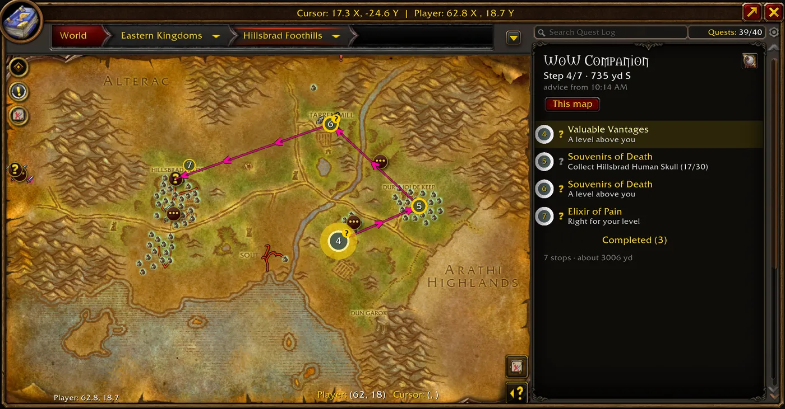
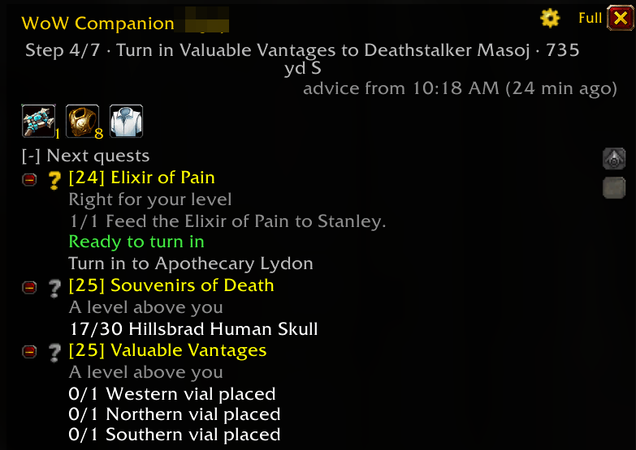

For World of Warcraft: Forever
The AI companion that knows your character
Ask it anything (what to do next, which gear to keep, how to level Tailoring) and it answers from your actual quests, bags and talents. Then it draws the route on your in-game map.
Free, for Windows 10 and 11 (64-bit). You'll need the game installed too.
What you need
- A Windows PC (Windows 10 or 11, 64-bit) with WoW: Forever installed.
- An account with an AI service, the same kind you might already use for chatting, like Claude or ChatGPT. The app connects to it to answer your questions.
WoW Companion doesn't come with its own AI. It uses an AI account you already have. Your plan, the numbered map route, the next-steps list and the in-game panel (with its gear upgrade and talent picks) work without one. Asking questions in the app needs one. A free model on your own PC works too. See AI options.

What should I do next?
Ask it…
Example answers, for an invented character. Yours come from your own game.
What should I do next?
You are level 16 and have new spells waiting: Flamestrike (Rank 1) and Arcane Missiles (Rank 2). Visit your mage trainer first and learn them. Then work through your Barrens quests at your level: Altered Beings, Echeyakee, Harpy Lieutenants and The Stagnant Oasis. Your route is on the map.
Which of my gear should I keep?
Your new Pagan Vest, a green chest piece you can wear at level 21, rolled “of the Eagle”. That suffix adds Intellect and Stamina, which suits a caster who wants to survive longer, so wear it. If a vest rolls a suffix with no Intellect, keep your current chest piece instead.
How do I level Tailoring?
You are at 112. Keep making Bolts of Silk Cloth up to 120, and keep every bolt, because you will use them up to about 190. Then make 5 Gloves of Meditation (Bolts of Woolen Cloth, Fine Thread and an Elixir of Wisdom each) to reach 125; buy the elixirs or ask an Alchemist. At 125, visit Josef Gregorian in Undercity to learn Expert Tailoring (level 20, 50 silver).
Asking questions uses your own AI account. See AI options. Your plan, the map route and the in-game panel work without one.
And the rest of the plan
Next steps and quests
A short plan of what to do next, with numbered stops on your map.

Gear upgrades
See which items would be an upgrade, and where one comes from or how to make it.
Talent picks for your spec
Talent advice that follows the play style you choose.

Profession leveling plans
Step-by-step plans for raising each profession, including what to gather or buy.
Map pins and an in-game panel
Your plan shows on the world map and the minimap, and in a small panel you can open with
/wowc.
How it works
Install the app
Download it and run the installer. It takes a couple of minutes.
It sets up the addon
The app's setup checklist can put the in-game addon in place for you.
Play and glance
Play as usual. Type
/reloadnow and then to refresh your plan, and glance at the panel.
Free and open source
WoW Companion is free. The code is open for anyone to read, on GitHub. It only reads what the game shows you and never plays for you.